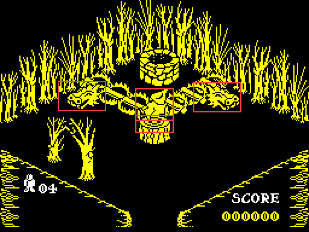
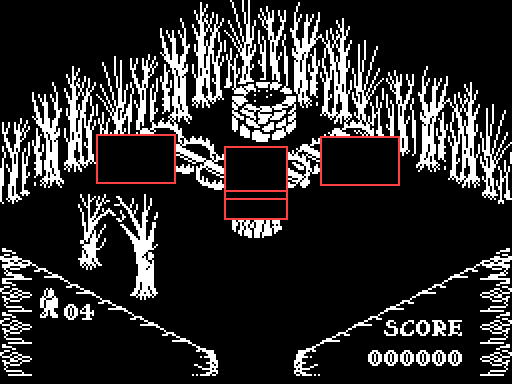
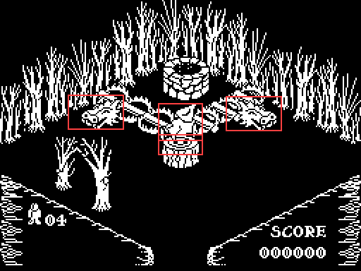
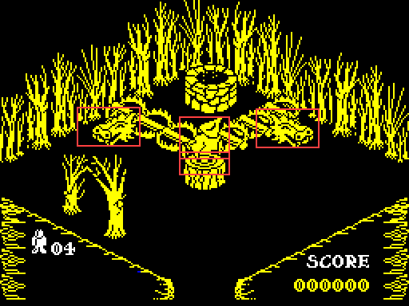

| How a moving object is drawn |
Pentagram draws the way Knight Lore does, with the same code nearly instruction for instruction (see also Knight Lore's page on the same pipeline). Nothing on the screen is ever rubbed out and redrawn in place. Each turn, only the rectangles that something changed in are rebuilt in a buffer off the screen, in depth order, and copied across whole. This page follows that pipeline stage by stage, then a real turn of the game through it, and then measures the places where Pentagram differs -- one of which can stop the game.
The main loop in START walks all 54 object records -- the player's legs and body, two bolts, two things from the sky and 48 for the room. Before each object's update routine runs, NEXT_OBJECT copies where its picture was last drawn (+$18 to +$1B: the width in bytes, the height in rows, the pixel x and y) to +$1C to +$1F: that is what may have to be rubbed out. The routine is found by the object's graphic number in UPDATES and entered by a jump, with OBJECT_DONE pushed as its return address.
A thing that falls calls DEC_DZ_AND_UPDATE_UVZ: one off its Z step for gravity, then ADJ_FOR_OUT_OF_BOUNDS, which cuts the step in U, V and Z against the floor, the walls and the other 53 records, one axis at a time, and adds what is left to the position (see how things move). A thing that animates changes its graphic number, which is its sprite: there is no separate frame counter in the drawing.
Most update routines that moved or changed something end in the tail of HOMER, SET_WIPE_AND_DRAW_FLAGS: bits 4 (draw me) and 5 (wipe my old picture) of +$07, then SET_DRAW_OBJS_OVERLAPPED. That works out the new picture's rectangle (CALC_2D_INFO, projecting the position through CALC_PIXEL_XY: pixel x = U + V - 128 and, counted up from the bottom, pixel y = (V - U + 128)/2 + Z - 104, each plus the object's drawing nudge at +$12 and +$13), takes the rectangle covering it and the old one, and sets bit 4 on every live record whose own rectangle meets it. Those will have to be drawn again, because the wipe will take a bite out of them. It is one level deep: what is marked does not mark its own neighbours.
When all 54 have had their turn, LIST_DRAWN writes the number of every record with bit 4 into DRAW_LIST, and RENDER_DYNAMIC_OBJECTS takes each one that also has bit 5: it clears the rectangle covering its old and new pictures in the buffer at BUFFER -- never on the screen -- in whole bytes across and pixel rows up, and pushes the rectangle on the stack to copy later.
SORT_AND_DRAW then draws every listed object into the buffer, each whole, each through its own mask, in an order worked out from their boxes: it takes a candidate, compares it with every other undrawn object, and swaps to any that has to go first, by the 27-entry table at DEPTH_ORDER; when a candidate survives the whole list it is drawn. The table is Knight Lore's entry for entry, and Knight Lore's depth-sort page draws all 27 cases. DRAW_OBJECT draws one: FIND_SPRITE finds the sprite and turns it in place to face the way the object does (mirrored, upside down, or both), and an unrolled run of code, SPRITE_ALIGNED_RUN for a picture on a byte boundary or SPRITE_SHIFTED_RUN for one that is not, lays it into the buffer with the stack pointer reading the sprite a mask and an image byte at a time.
Last, RENDER_DYNAMIC_OBJECTS pops each rectangle and BLIT_TO_SCREEN copies just that part of the buffer to the display, a row at a time up the screen. Nothing outside the rectangles changes, so it does not matter what else is lying in the buffer, and nothing flickers, because nothing is ever drawn on the display piece by piece.
DRAW_WORK ($A714) counts the turn's work -- one for each object drawn, one for each rectangle wiped -- and OBJECT_DONE then waits six units less that, a unit being 1280 turns of a 26 T-state loop, just under half a frame. A quiet turn is padded out to the same length as one with six things to do; a busier one simply takes longer. On the first turn in a room nothing is wiped: every object is drawn into a cleared buffer and the whole of it copied once.
Room 29 has two heads pacing to and fro (graphics 92 and 93, DEADLY_PACER_U and DEADLY_PACER_V) and the player standing still. This is its turn 5 -- the room's first turn draws everything, and these are ordinary ones -- run by the game's own code in a simulator when this page was built, stopped at OBJECT_DONE after the updates, at the sort in RENDER_DYNAMIC_OBJECTS, at every call of DRAW_OBJECT and after the copy. 4 objects moved or changed, so there are 4 rectangles, outlined in red; 16 objects are drawn to fill them, and DRAW_WORK comes to 20 (16 + 4), so the turn does not wait at all. The player is in every turn's count: his legs' routine marks him to be redrawn whether he moves or not, and the body copies the legs' flags.

The screen as the turn begins.

The buffer after the wipe: each rectangle is cleared. Round them are the leftovers of earlier turns, which are never copied.

The buffer after drawing: every listed object drawn whole, back to front, so parts of them spill outside the rectangles.

The screen after the rectangles are copied.
The objects drawn, in the order the depth sort chose:
| Order | Record | Graphic | Update routine | Why it is drawn |
|---|---|---|---|---|
| 1 | 43 | 15 | DRAW_AT_L8_D2 | overlaps a change |
| 2 | 30 | 30 | STILL_DEADLY | overlaps a change |
| 3 | 29 | 30 | STILL_DEADLY | overlaps a change |
| 4 | 42 | 12 | DRAW_AT_L8_D2 | overlaps a change |
| 5 | 25 | 93 | DEADLY_PACER_V | moved |
| 6 | 50 | 12 | DRAW_AT_L8_D2 | overlaps a change |
| 7 | 34 | 30 | STILL_DEADLY | overlaps a change |
| 8 | 33 | 30 | STILL_DEADLY | overlaps a change |
| 9 | 51 | 15 | DRAW_AT_L8_D2 | overlaps a change |
| 10 | 26 | 92 | DEADLY_PACER_U | moved |
| 11 | 28 | 30 | STILL_DEADLY | overlaps a change |
| 12 | 32 | 30 | STILL_DEADLY | overlaps a change |
| 13 | 0 | 34 | PLAYER_LEGS | the legs: marked every turn, moving or not |
| 14 | 31 | 30 | STILL_DEADLY | overlaps a change |
| 15 | 27 | 72 | PUSHABLE | overlaps a change |
| 16 | 1 | 42 | PLAYER_TOP | the body: copies the legs' flags, bits 4 and 5 with them |
The rectangles wiped and copied, in pixels from the top left:
| x | y | Width | Height |
|---|---|---|---|
| 112 | 95 | 32 | 15 |
| 112 | 73 | 32 | 27 |
| 160 | 68 | 40 | 25 |
| 48 | 67 | 40 | 25 |
| Knight Lore | Pentagram | |
|---|---|---|
| Object records | 40 | 54 (OBJECTS) |
| The draw list | 48 bytes | 48 bytes, not grown to match (DRAW_LIST) |
| The chain of candidates | 8 bytes | 16 bytes (CANDIDATE_CHAIN) |
| A picture left of the screen | wraps round to the right-hand side | drawn from x 0 (CALC_PIXEL_XY) |
| Turning a sprite | three routines | one (FIND_SPRITE) |
| The whole-screen copy on entering a room | clears the buffer as it goes | leaves it (SHOW_BUFFER) |
| Boxes that intersect (entry 13) | destroy a charm caught in them | nothing (BOXES_INTERSECT) |
| The stack | reset for every object | one stack; the update routines keep it straight |
CALC_PIXEL_XY adds the drawing nudge to U + V - 128 and, if that does not carry, uses 0 instead. Every nudge in use is negative (in the first turns of every room, bytes from $EF to $FB), so adding one to an x that stays on the screen always carries: no carry means the picture would have started left of the screen, and without the clamp its x would wrap round to about 250 and it would be drawn at the right-hand edge. Knight Lore has no such check. In the first turns of all 139 rooms, no picture would have started left of x 0: nothing is built that far into the left-hand corner. It is something moving into that corner that meets the clamp. CALC_PIXEL_XY run on its own, on a record with the legs' nudge (-12, -6):
| U | V | U + V - 128 | With the nudge | Pixel x written | Without the clamp |
|---|---|---|---|---|---|
| 69 | 69 | 10 | -2 | 0 | 254 |
| 72 | 72 | 16 | 4 | 4 | 4 |
| 80 | 80 | 32 | 20 | 20 | 20 |
| 128 | 128 | 128 | 116 | 116 | 116 |
So Sabreman pressed into the left-hand corner of a full-sized room, as far as the walls let him (U and V 69, with his half-size of 5 and the walls at 64), is drawn at the left edge of the screen instead of reappearing at the right. The price is that an object with a nudge of 0 would always be drawn at x 0; none has one.
The sort keeps every object it has made the candidate since the last draw, so that meeting one again -- three or more boxes each partly behind the next -- is caught and broken by drawing it at once. Knight Lore's chain holds seven and its end marker; Pentagram's fifteen. Run on the first turn of every room, where the whole room is sorted at once, the longest chain was 9, in rooms 12, 51, 92, 100 -- the four start rooms, which share a layout; 4 rooms made a chain longer than Knight Lore's seven. So Pentagram needs the bigger chain, and a chain that long in Knight Lore's eight bytes would have written its end marker over the next routine. That this is why it was doubled is an inference.
DRAW_LIST is 48 bytes, Knight Lore's size for its 40 records; Pentagram has 54. A list of more than 47 objects writes on into SORT_AND_DRAW, the code that reads it. The list is longest on the first turn in a room, when everything is drawn. Run on the first turn of every room, the fullest was room 87, with 45 -- its 43 records from the room's data and the player's two -- so no room as the game builds it overflows. But the room's 48 records have space for more: quest things -- the bucket and the collectables, which the player can carry and put down anywhere -- come into a room in the free records (QUEST_INTO_ROOM). Room 87 has 5 free.
So, in the simulator, collectables were left in room 87 -- by writing their room into their quest records, which is what leaving them there does (QUEST_OUT_OF_ROOM) -- and the player restarted in the room by the game's own restart, running on afterwards as the build's sessions run the game, interrupts and all:
| Things left | Listed | What happened |
|---|---|---|
| 2 | 47 | nothing overwritten; the game plays on (81, 94, 95, 94 turns in each 5 seconds) |
| 3 | 48 | the first bytes of the sort become FF 32 14 A7: RST $38, LD ($A714),A; turns in successive 5-second spells: 2, 0, 0, 0; it ended in the ROM |
| 4 | 49 | the first bytes of the sort become 35 FF 14 A7: DEC (HL), RST $38, INC D, AND A; turns in successive 5-second spells: 0, 0, 0, 0; it ended in SORT_AND_DRAW |
| 5 | 50 | the first bytes of the sort become 34 35 FF A7: INC (HL), DEC (HL), RST $38, AND A; turns in successive 5-second spells: 11, 17, 1, 0; it ended in DRAW_OBJECT |
With three or more, the list's last entries and its end marker land on the first bytes of SORT_AND_DRAW, and nothing ever puts them back. The end marker, $FF, is RST $38: from then on every turn's sort first calls the ROM's interrupt routine, which counts the frame and scans the keyboard into the system variables -- partly through IY, which in the game points wherever the code last left it -- and ends with EI, so the 50 Hz interrupt, which the game otherwise allows only while paused, starts running the same routine fifty times a second. The bytes lost before it clear DRAW_WORK, so the pacing goes wrong as well. In every case the game ground to a halt within the 20 seconds watched, where normally it ran 81 to 95 turns in 5 seconds of the simulated Spectrum's time.
A player could bring this about with nothing but the pick-up key: carry three things into room 87, put them down, and walk out and back in -- or lose a life there. That was not played through here: the quest records were written directly, and what the ROM routine does to the game's memory is read from the code, not traced. The game's other bugs are on the bugs page.